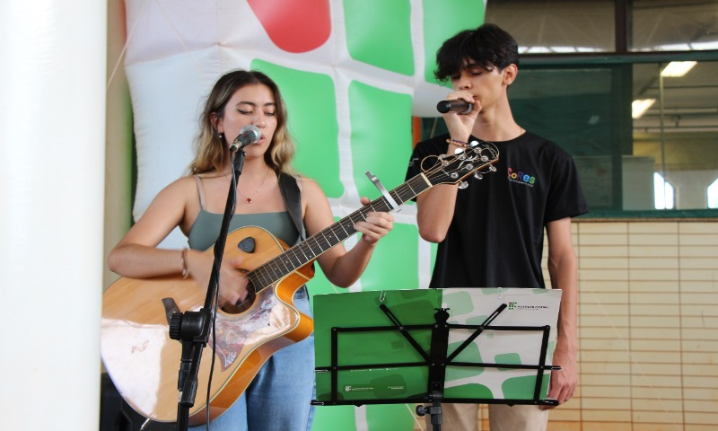
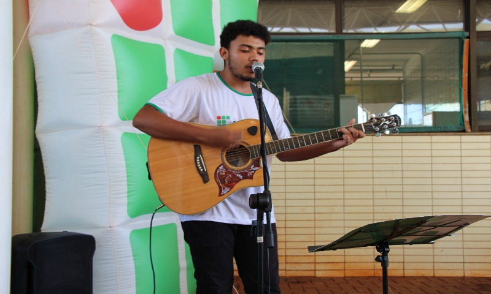

	<DOCTYPE html>
			<html lang="pt-br">
			<head>
				<title>Trabalho Final - IFMS Dourados</title>
				<meta charset="utf-8">
				<link rel="stylesheet" href="css\estilo.css">
			</head>
			<body>
				<h1>Imagens do Projeto - Intervalo Cultural Campus IFMS Dourados</h1>
				<p> <a href="index.html">Página Inicial</a></p>
				<figure>
					
					<figcaption>Apresentação de dois alunos expressando sua arte por meio do canto e instrumento musical</figcaption>
				</figure>
				
				<figcaption>Apresentação Solo por meio de canto e instrumento musical </figcaption>

	        </body>
	        </html>
	</DOCTYPE>
	        <footer> 
			    <p> Trabalho final - IFMS Dourados - desenvolvido por Cléberson Pereira </p>
			</footer>
